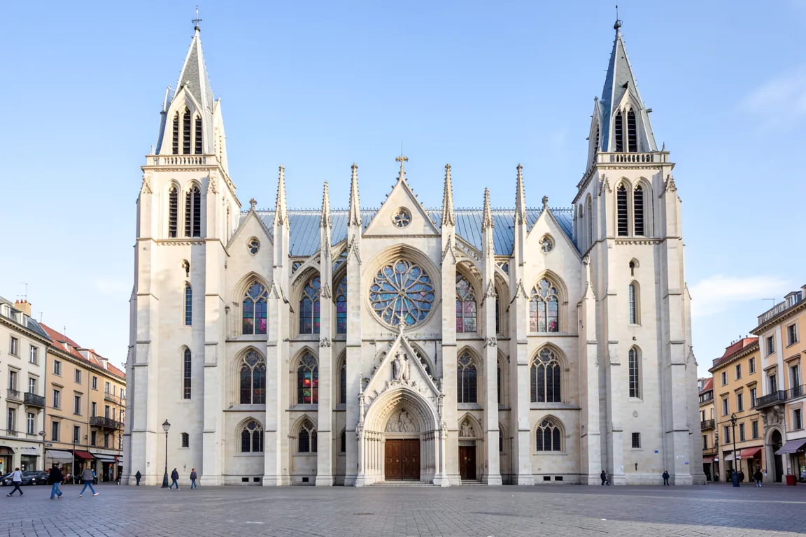

arkitektur · 13th–early 16th century · også: Høygotikk, Rayonnant, Perpendicular
Spissbuer, ribbehvelv og forstøttende buer gjør murveggen til et skjelett, og de frigjorte veggene blir til farget glass. Chartres, Reims og Amiens satte høyderekorden som hver senere katedral prøvde å slå.

Kjerneidé
En bygning er et steinskjelett som løfter blikket mot himmelen: skyvet fra hvert hvelv tas opp av en støttebue, slik at veggene kan løses opp i lys.
Designprinsipper
Tegn hver åpning som en spissbue, med en stikk på 1,0 til 1,5 ganger spennet, slik at skyvet går ned og ikke ut.
Dekk hvert fag med et ribbehvelv, og før ribbene ned på samlede søyler slik at hvelvlinjen når gulvet.
Fang skyvet fra det høye hvelvet med forstøttende buer utenfor sideskipets tak, i omtrent 45° mot veggen.
Reis skipet til 2 til 3,5 ganger bredden, fra 30 til 48m under hvelvet, i tre nivåer: arkade, triforium, lysåpning.
Gi den øvre veggen til glass: vinduene fyller 60 til 80 % av lysveggen, delt av steinmaswerk.
Gjenta faget med 5 til 7m langs hele skipet, slik at blikket ledes mot alteret av pilarenes rytme.
Antimønstre
Rundbuer og tunge enkle vegger med små åpninger
Flate tak eller åpne tretrekonstruksjoner over skipet
Klassiske ordener, frontoner eller symmetriske romerske portikuser
Brede, lave proporsjoner som stanser det vertikale løftet